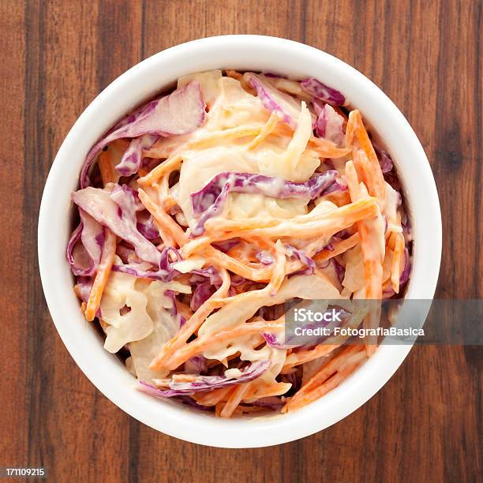

Coleslaw

Description
Coleslaw is a popular salad dish, served alongside barbecues and in many burger
restaurants.
It is usually comprised of white and red cabbage, grated carrot, and white onion.
Ingredients
- White cabbage
- Red cabbage
- White onion
- Grated carrot
- Mayonaise
Instructions
- Finely slice your red cabbage.
- Finely slice your white cabbage.
- Finely slice your white onion.
- Grate your carrots to your prefered thickness.
- Add all of your prepared vegetables to a container.
- Add the mayonaise to the container.
- Mix until a throughly coated.
- Serve alongside your desired dish, Enjoy!